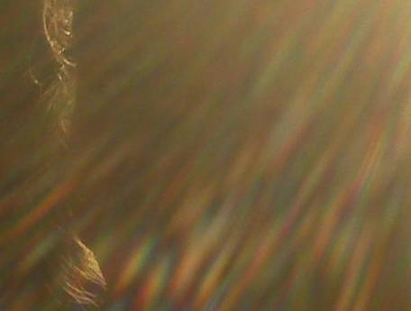
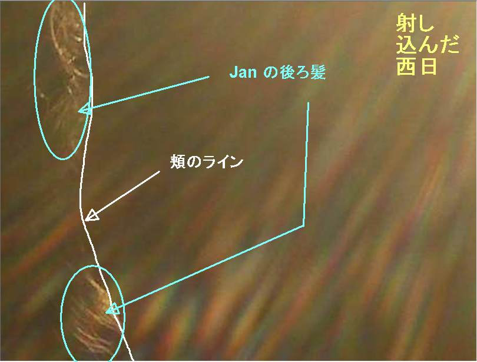
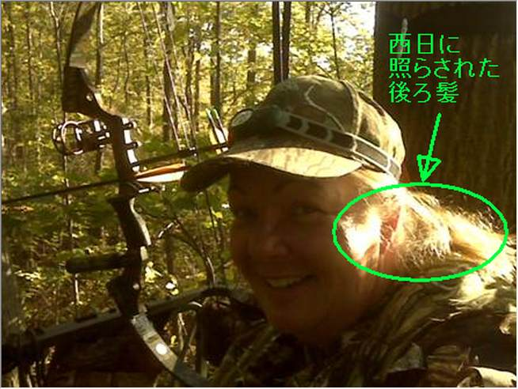
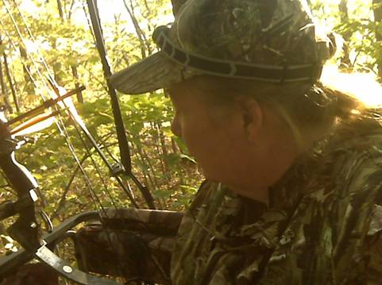
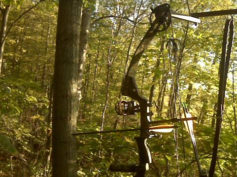
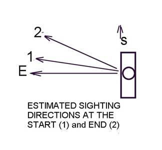
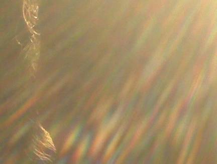
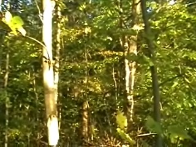
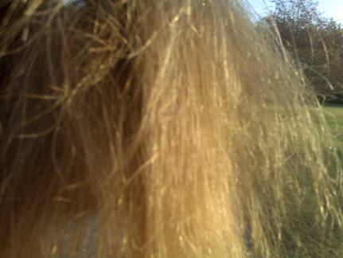
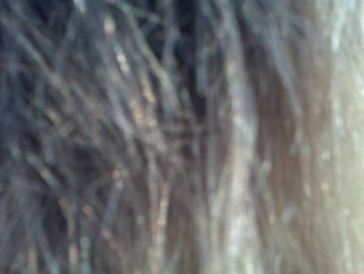

「森のプレデター」の正体
初出
【編】Bruce Maccabee が報告した「プレデター的存在、不思議な写真、UFO」の謎を解く （途中：その4） (2020-11-15)
要旨
謎の写真

その正体を図解


但し書き
・この記事は編集中とする。つまり、タイトルに 【編】 の表示がついている間は、断りなく、随時修正、変更を加える。履歴
(2020-11-15) 追加 (2020-11-06) 追加 (2020-11-02) 追加 (2020-10-31) 作成前置
・先日の過去記事、・この写真を分析した Bruce Maccabee が写真には説明不能な異常s（anomalies）が発生していると語っているが、それが説明不可能だとは私には思えない。と予告したので、暇を見ながら何回かに分けてその説明を行う。 ・次の順序で行うつもり。 ・(1) Bruce Maccabee のソース記事を（消えた時に備えて）丸ごと引用し、 ・(2) DeepL による自動翻訳をつけ、その上で ・(3) 「不思議な写真」の謎を合理的に説明し、 ・(4) プレデター的生物の正体を説明し、 ・(5) ほぼ同時に目撃された UFO の正体を説明する。 ・(6) おまけで周囲環境の無音化を説明する。コメント
・先日の過去記事で・この x の正体についてはいずれ説明する予定だが、たぶん、Bruce Maccabee の妻の体験した透明な生物の正体もその x だろう（し、Robert Guffey によれば同時に発生したとされる Oz factor－周囲の無音化－や UFO の正体も x である程度（*1）説明がつく筈）。 ref: Seriah : 透明な泡のような存在が目の前を通り過ぎるのを目撃 。その正体は…（途中：その1） (2020-10-27)と述べたが、問題の記事を読んだら、はやりこのプレデター的存在の正体は x に違いないと確信した。甥とその仲間が目撃したUFO の正体も x でほぼ間違いない筈。 ・とりあえず、事実関係の訂正を優先する意味で上記を報告。詳しい説明はいずれ、別記事で行う予定（だが、解決ずみの事件は興味が失せるので優先順位が低くなるのはいたしかたない）。 ref: Bruce Maccabee の妻の体験 : Oz factor 発生、透明な生物、UFO 出現 （＋訂正2） - http://news21c.blog.fc2.com/blog-entry-16989.html (2020-10-29)コメント
・しかし…。UFO 写真分析の第一人者である Bruce Maccabee が問題の写真の正体に気づかないとは。あんなにはっきりと正体が写っているのにそれが目に入らなくなるのだから、先入観って怖いね。「不思議な写真」の謎を解く
撮影した写真を時間順に並べると…
・Bruce Maccabee の妻（Jan）によれば、以下のような順番で写真を撮影したという。 ・(1) 18:21 自撮りで自分の姿を撮影（下）。  ・(2) さらにもう一枚、自撮りで自分の姿を撮影したが、映像が気に入らず、消去。 ・(3) プレデター的生物を目撃。 ・(4) 18:23 プレデター的生物にカメラを向けて撮影。ただし撮影した時点では、すでにそれは消え去った直後だった。これが問題の「不思議な写真」（下） ・(5) 18:23 さらに再び、自撮りで自分の姿を撮影（下）。Bruce Maccabee が指摘したこの写真の不可解な点
・Bruce Maccabee （現在78歳、物理学博士：専門は光学）は写真分析の専門家で、 MUFON の依頼に応じて UFO 写真の分析も長年担当してきた。昔から有名な UFO 写真の多くは、彼が鑑定してきた。 ・Bruce Maccabee によれば、問題の「不思議な写真」には次のような謎があるという。 ・(a) 写真には写って然るべき樹木が写っておらず、代わりに左下から右上に光学的な歪（optical distortion）が移動している様子が写っている。この光学的な歪みの正体が謎。 ・(b) 写真の縦横の画素数が 528 x 400 と異常に少なくなっている。前後に撮影した写真は初期設定どおりの 1024 x 768 になっているのに、間に挟まれたこの問題の写真だけ画素数が極端に少なくなっている。カメラには撮影する画素数の設定が 3通り（1600x1200, 1024x768, 640x480）あるが 528 x 400 という設定は存在しない。さらに Jan は撮影の間に画素数の設定切り替えなどしていない。 ・(c) 色や輝度の分解能が普通の写真のそれより大幅に低い。普通は 10万色ほどなのに、この写真は 2.7万色しかない。Bruce Maccabee の追試
・Bruce Maccabee は予想される批判（問題の写真に写っているのは Jan の髪の毛だ）に対する反論として、追試（髪の毛を撮影）を行い、そのような批判が無効なことを論証している。 ・次に、UFO の磁界が写真に影響を与えた可能性を想定し、強力な磁石をカメラに近づけて追試し、その可能性を否定している。Bruce Maccabee の結論
・問題の「不思議な写真」の謎は未解決。 ・だが、カメラに対する奇妙な影響（画素数、色分解能の低下）と、光学的歪みの発生に関するかなり良い客観的データ（写真）が得られた。事前に読み手の調査の手間を省いておくと…
・ここまで読めば、異常に少ない画素数や現場の樹木が写っていない事からピンとくるはず。もしやアレだからでは？…と。私も真っ先にそれを疑った。 ・だが、それはハズレ。なぜなら…ref: BlackBerry Pearl 8130 - Full phone specifications - https://www.gsmarena.com/blackberry_pearl_8130-3933.php・以上で、この写真の謎の解明に必要な情報は全て揃った。この写真の正体
・問題の写真に写っているのは「光学的な歪」ではない。写真に写っているのは ・カメラに射し込んだ西日と、それによる強烈なレンズ・フレア。そして ・その西日に照られた Jan の後ろ髪と ・Jan の顔のライン ・その有無を言わせぬ証拠が下の図解。ゴチャゴチャするので図解には含めなかったが、帽子の縁も上部の後ろ髪のあたりにチラリとだが見えている。 ・Jan はプレデター的存在を目撃する直前まで、自撮りで自分の姿を撮影していた。時系列で言えば… ・(1) 18:21 自撮りで自分の姿を撮影 ・(2) さらにもう一枚、自撮りで自分の姿を撮影したが、映像が気に入らず、消去。 ・(3) プレデター的生物を目撃。 ・(4) 18:23 プレデター的生物にカメラを向けて撮影。 となっているが、この (4) ではまだカメラは自分に向いたままだった。Jan はプレデター的生物を目撃したことで気が動転しており、カメラの向きを変ええずにそのまま撮影をしてしまったが、その間違いに気づかなかった。なので彼女は彼女の記憶では、右手にカメラを顔から1.5ft ほど離れたところ（画面に映っているものが目にピントが合うように）に持ち、歪みのある方向にカメラを向けて撮影していたとのことです。と証言したが、意図的な嘘ではなく、怪事件に遭遇してパニック状態になり大慌てで撮影したために記憶も混乱していただけ。俗に言う ウロがきた という状態。 ・カメラが彼女に向かっていれば、「彼女の席は東を向いており」と証言にあるとおり西日がカメラに入り込む。上の図解でもそれは明らか。 ・西日がカメラに差し込むと、射し込んだ側の映像は大部分が露光（超）過多となり何も見えなくなる。強烈なレンズ・フレアも発生し、映像全体がレンズ・フレアで覆われる。実際、それが起きたことが上の図解からわかる筈。 ・画素数が少なくなっている理由は、たぶん… ・カメラの手ブレ抑制機能が、レンズ・フレアの酷い部分を手ブレと解釈して補正を試みた。カメラの手ブレ補正ソフトは手ブレを補正（*1）したつもりだったが、実質は露光（超）過多の部分の削除となった。or ・露光（超）過多の部分――上半分と右半分――をカメラの映像調整ソフトが（気を利かせたつもりで？）カットした。 ・色や輝度の分解能が普通の写真のそれより大幅に低い理由は、たぶん… ・カメラのイメージ・センサが射し込んだ西日の直撃で露光（超）過多になって感度域が飽和していた。それでもカメラの調整ソフトが健気に Jan の後ろ髪が見える程度まで補正してくれた。 ・なお、前述の画素数と色分解能の低下の説明には反証可能性が備わっている。つまり、問題のカメラを同様の条件（西日が差し込む状態）で撮影すれば実際に追試が可能。（*1）
・方式にもよるが、携帯電話機の手ブレ補正機能は有効画素数の低下が伴うことが多い。ブレの程度が増すと有効画素数の低下の割合も増加する。蛇足
・前回の記事で・ここまで読めば、異常に少ない画素数や現場の樹木が写っていない事からピンとくるはず。もしやアレだからでは？…と。私も真っ先にそれを疑った。 ・だが、それはハズレ。なぜなら…と述べた箇所の種明かしをしておく。アレとは（自撮り専用の）「セルフィー・カメラ」のこと。だが、問題の携帯電話機は古いタイプ（10年以上前）なので「セルフィー・カメラ」は搭載されていない（下）。プレデター的生物の正体
・以上の「不思議な写真」の解明は脇道というか余興というか、言わば前座でしかない。 ・ここからが真打ちの話題であるこの事件におけるプレデター と UFO の解明に移る。だが、謎の難易度という点では前座よりも大幅に下がる。つまりもっともっと簡単に解ける。 … …プレデター的生物に関する具体的証言
ほぼ同時に目撃された UFO の正体
UFO に関する具体的証言
おまけ：周囲環境の無音化の正体
ソース記事の出典
ref: JAN' S WEIRD PHENOMENON - http://brumac.mysite.com/JANs_Phenomenon/JANs_Phenomenon.htmDeepL
・以下の自動翻訳にはあちこちに酷い誤訳（特に距離の単位の換算、予知者って何だw）があるが、基本的な理解の障害にはならない筈。森の中の "予知者" 或いは JANの奇妙な体験 (速報) それは9月29日水曜日、9月の最終日の次の日で、オハイオ州の鹿の狩猟シーズンは4日前になったばかりでした。 日は涼しく湿っていましたが、その後、夕日が沈む美しい暖かい一日となりました。 ヤンは狩猟を始めることに不安を感じていました。 彼女の狩りの方法は、"ツリースタンド "に座って待つことと観察することでした。彼女のスタンドの座席は15フィートのはしごの上にあります。 彼女の席は、大規模な植林された畑と低密度の住宅地に囲まれた、何エーカーもの森の北西の角にあります。 彼女の席は東を向いており、四方を木々に囲まれている。 彼女は午前中に狩りをしませんでしたが、彼女は新たにインストールされた弓ハンガーをテストするためにシートに15フィートを登りました。彼女は弓ハンガーからぶら下がっている彼女の弓の写真を撮った。彼女は彼女のブラックベリー「パール」、モデル 8130 カメラの携帯電話で写真を撮った (以下の他の写真)。携帯電話には、各写真の日時、空間解像度（水平と垂直のピクセル数）、各写真ファイルの合計「バイト」サイズが記録される。  木の台から撮影した弓とホルダー 2010年9月29日 10:14 AM 解像度 1024x768 (404 kb) ヤンは午後遅くから夕方にかけて、木の中にいたときに不思議な体験をした。 彼女は5:30頃に彼女の木のスタンドに行き、座っていました。 リスが彼女の頭の上に木の実を落としていて、動物や鳥、コオロギが動いて音を立てていた。 彼女の時間を占めるために、彼女は彼女の携帯電話（無言のコミュニケーションの手段）で「テキスト」をしていました。 午後6時21分頃、彼女は木立の中で自分の写真を撮ることにした。 彼女は太陽を背にして東を向いていた。 彼女はカメラを上に、彼女の左に持っていた。 太陽は彼女の後ろにあり、西に低く、光が木の枝を透過していた。彼女は、彼女の頭の上と彼女の左に少しカメラを持って最初の写真を撮ったので、彼女は地面に彼女を過ぎて見下ろす写真を得ることができます。 彼女はその後、2枚目の写真を撮ることにした。 彼女は2枚目の写真を撮って、それが好きではなかったので、彼女はそれを削除しました。 木立の中のJANの最初の自撮り 2010年9月29日 6:21 PM 解像度 1024 x 768 (260 kb) 突然、森は静かになった。 雑音が止まった。静寂は "奇妙な "ものでした。 それは彼女を驚かせ無気力にさせたので、彼女は友人にテキストメッセージを書きました（それによってこの出来事を記録しました）。 何かがおかしい。 森はただ死んだような静けさになりました。リス、鳥、コオロギはありません。 奇妙です (6:23 PM EDT) 彼女は、コヨーテか黒豹か何かの捕食動物がこの静けさの原因だと思っていました。 それから彼女は、奇妙な視覚的な「効果」が彼女の視野を横切って右に向かって移動していることに気づくようになった。 彼女はそれを「サランラップ」を通して見ているかのように説明しました。 おそらく、より適切な比較は、熱い道路の上に蜃気楼を見ているようなものでしょう。 彼女はこのシーンの歪みを、映画「プレデター」の中の見えない生き物の効果に似ていると比較しています。 この歪みは、彼女の地上15フィートよりも高い高度にあり、おそらく地上約25フィートの高さにあったのでしょう。 彼女は眼鏡を外して右目をこすってみましたが、最初は浮腫み（目の中のモテ）があると思っていました。 しかし、こすった後、それはまだそこにあり、浮腫ではありませんでした。 それは彼女の右に約15度から直進の右に約45度まで移動した（下の図を参照してください、縮尺ではない）。そして、それは消えました...物事は正常に見え、彼女は再び正常な音を聞くことができました。  彼女の記憶では、右手にカメラを顔から1.5メートルほど離れたところ（画面に映っているものが目にピントが合うように）に持ち、歪みのある方向にカメラを向けて撮影していたとのことです。 彼女の記憶では、その写真は歪みが消えた直後に撮影されたものである。 写真には近くの木が写っているはずだ。 写真には写っていない 写真を撮影したときの方向性 最終表示 2010年9月29日 6:23 PM 解像度. 528 x 400 (43.2 kb) 1分ほどして、彼女はさらに2枚の自分の写真を撮りましたが、そのうちの1枚が下の写真です。 3枚目の自撮りJANの木立の中の写真 2010年9月29日 6:23 PM 解像度. 1024 x 768 (306 kb) 1時間半ほど座った後、彼女は7時45分頃に木の台を出て、夜のゲストと一緒に夕食を食べに来た。彼女は自分の奇妙な体験について言及することを考えていませんでした。 夕食の後片付けと映画の後、ゲストが帰ろうとしていた時、私のフェイスブックのメッセージを確認すると、ヤンの甥である高校生からのメッセージが届いていました。 高校は木立の北西約1マイルのところにあります。 と書いていました。 今夜はフィールドでプレーしていたのですが、暗くなり始めた頃、巨大な明るい光がフィールドの上に現れ、横に移動し始めました。約5分後に再び現れましたが、今度は琥珀色でした。これを見た人は4人知っていますが、ある上級生によると、去年も同じことが起きていて、実際にリハーサルを中止したそうです。 何時頃だったのか聞いてみたところ、"午後7時50分～8時"、つまりヤンの "現象 "から約1時間半後との回答でした。 この高校での目撃がヤンが見たものと関係があるかどうかは別として、私がこのことをヤンや他のお客さんに話したときに、彼女にすぐに影響が出たのは事実です。 彼女は突然、自分の体験を誰にも話していないことに気づいたのです。 彼女はその後、森が静かになり、その後、動く "歪み "が現れたことについて思い出したことをかなり詳細に説明しました。その後、さらに議論を深める中で、彼女は実際に彼女の友人に森が静かになることについての簡単な説明をメールで送ったことを思い出しました。 彼女はまた、彼女のエンディング・フレーズである "Is odd"（上記のテキストを参照）は、動く歪みへの斜めの言及であったことを思い出した。 しかし、彼女はそれが完全に彼女が見ていたものを説明するためにテキストの多くを取るだろうと知っていたので、彼女は彼女の友人に歪みの効果を説明しませんでした。 代わりに、彼女は、彼女がテキストを停止し、狩猟に彼女の集中力を戻すべきだと感じた。 翌日の更なる議論の中で、彼女は、奇妙な写真が消えたように見えた後、歪みの方向に向かって撮影したことを思い出した。写真の分析
森の中の突然の静寂は奇妙なものだったが、木々の間を移動する光学的な歪みの奇妙さに比べれば何でもなかった。 それが何であれ、ヤンが撮った写真にはその痕跡が残っているように見える。 下の写真は、少し明るくなった後の上の写真です。 歪みは写真の上部付近で左から右に移動しています。  下の写真は、翌日に通常の状態で撮影したものですが、1時間前に撮影したものです。  平常時の比較写真 SEPT.30 5:36 PMの解像度。 1024 x 768 見てわかるように、歪みのある写真は、約10フィートから約50フィート（そしてそれ以上）の距離にある森の中の木や葉を映し出すべきです。 木の画像は、彼女自身の前後の写真にあるように、シャープに焦点を合わせなければなりません。 そのシーンの通常の光学条件の下でのカメラの正常な動作が、このような歪みのある画像をもたらすはずがありません。 他にも二つの異常がある。 第一に、他の写真はすべて1024ピクセル（横）×768ピクセル（縦）の空間解像度で撮影されているのにもかかわらず、この一枚の写真は528×400で撮影されている。第二に、他の写真は200kb以上の「バイト」サイズを持っていたのに対し、この写真は43.2kbしかありません。 まずは解像度を考えてみましょう。カメラには空間解像度の3つの設定があります。"1600×1200ピクセル（比率：1.333）に相当する「大」、1024×768ピクセル（比率：1.337）に相当する「中」、640×480ピクセル（比率：1.333；NTSC標準テレビ解像度）に相当する「小」である。しかし、電話機で記録された異常画像の空間解像度は、528×400（比率：1.320）であった。これは異常な空間解像度である。ヤンは解像度を変えようとはしなかったが（この調査でこのカメラでどのように行われているのかを知るまでは、その方法すら知らなかった）、仮に変えようとしたとしても、カメラを528×400に設定することはできなかったのである。では、どのようにしてこの異常な解像度に設定されたのでしょうか？ 画像サイズについては、「中」の解像度の写真では、画像サイズの合計がバイト数で200kb以上になることが一般的です。しかし、この異常な写真は「バイトサイズ」がはるかに小さく、これは空間解像度が低いだけの結果ではありません。 中サイズと異常サイズのピクセル解像度比は、(1024x768)/(528x400) = 3.7であるのに対し、「バイトサイズ」比は(歪み画像の後に続く306kbの画像を使って)306kb/43.2kb = 7.1となります。 バイトサイズ比の違いは、明るさレベルの数を減らした結果であると考えられます。 (写真処理プログラムでは、通常の写真では約10万色の色レベルが表示されますが、異常写真では27000色しか表示されません)。髪の毛が生えたような体験
歪みの写真は、髪の毛の写真に見られるようなフィラメントの表面からの細長い反射の集まりのように見える。 ヤンの髪の毛がカメラの前にあったということを示唆しているわけではありません。 ヤンの髪はポニーテールで結ばれ、その上に帽子をかぶっていた。 上の写真が示すように、一番長い髪の毛は肩と背中にかかっていた。 彼女はカメラを1フィート半ほど前と右に構えていた。 彼女の髪のほとんどが帽子の下にあったという事実を除けば、彼女の髪は1.5フィートの距離でカメラの前に届くほど長くはない。 それにもかかわらず、彼女の髪の毛の近くで撮影された写真と歪みの写真を比較することは有益です。 そのような2枚の写真を以下に示します。 これらの写真は、彼女の髪の毛をかなり広げて撮影されています。最初の写真は、西の低い太陽の光の加減で、髪の毛がどのように見えるかを示しています。左側と中央では髪の毛が濃いですが、右側では「透明」になっていて、ピントの合った背景まで髪の毛が透けて見えます。 二枚目の写真では、カメラは彼女の髪から1インチほどしか離れていません。  太陽熱による毛髪の照明実験 カメラは彼女の髪の毛から1フィートくらいのところにありました。  髪の毛のクローズアップ写真 カメラは髪の毛から1センチほどしか離れていませんでした。 髪の毛の写真」を調べると、ディストーション写真に見られるものと似た「ストランド」効果が見られますが、ディストーション写真に見られる色のフリンジや「虹」、「スペクトル」効果（ガラスのプリズムのように色が分離している）はほとんど見られません。 髪の毛がある程度透明になるほど薄いところでは、背景がぼんやりと見えますが、歪曲されていません。 このように、髪の毛のようなもの（細い髪の毛）をカメラの前に置いた場合、髪の毛自体にはピントが合っていないが、髪の毛を通して見える背景にはピントが合っていると結論づけられるかもしれません。磁気実験
時折、UFOの近くに強い磁場が存在することを示唆する報告があります。 したがって、私は強力なアルニコ棒磁石の携帯電話への影響をテストしました。 ブラックベリーの上部には、表示画面が含まれており、下部にはコントロールボタンが含まれています。 携帯電話の上部に磁石の端を配置すると、撮影した写真にほとんど、または全く識別可能な効果を持っていた. 磁石が下半分に移動されたときにカメラが "オフになっている "画面が真っ白になり、磁場がカメラ内の電子機器に影響を与えたかのように、写真を撮ることができませんでした。 磁石が取り除かれたとき（カメラから数インチ以上移動）カメラは通常の動作を再開しました。 カメラが歪みを伴うことによる強い磁場に浸漬されていた場合、それは任意の画像を撮影することができなかったであろうことを、その後、推定します。 これは、歪みが "不可能 "磁気効果のいくつかの並べ替えであった場合、この効果は、カメラからの距離で空間の小さなボリュームに限定されていたことを、その後示唆している...結論
まだ結論は出ていません。 これは、カメラの何らかの奇妙な効果と組み合わされた奇妙な光学効果の合理的によく記録された観察（写真付き）として提供されています。付録
変わった光 by M.P. (注：以下の目撃情報は、日没後約30分後の午後7時50分から8時の間に発生しました。以下は、上記の文章で報告された目撃情報の詳細を提供します)。 この特定の出来事は、9月29日の水曜日の夜、高校の野外バンドのリハーサルで行われました。私たちの後ろは暗く、同じドリルの動きを8～10回くらい練習していました。これは単調だと感じたのを覚えていますが、周りの人たちのうめき声や表情からも単調さが伝わってきました。ブロードウェイミュージカル「ミス・サイゴン」の「The Heat Is On In Saigon」の最後の数小節が流れていたのを覚えています。サックスのセクションはフィールドのほぼ中央に立っていて、クラリネットのセクションは私たちのすぐ後ろにいました。突然、空に明るい光が見えてきました。さっきまで飛行機がたくさん飛んでいたので、頭の中では飛行機だと思っていたのですが、隣に立っていた人が「あれは一体何なんだ」と叫んだので、他の何かだと思いました。飛行機ではない）何か別のものだと思った。 私が見上げると、二人で3～5秒ほどそれを追いかけていました。それが何であれ、それは右に移動し、それが秒ごとにさらに縮むかのように小さくなり、そしてそれはまるでそこにはなかったかのように消えてしまった。私は実際に、彼が口を尖らせて私を見たのと同じように、私の隣の男を見渡したことを覚えています、そして私の目はおそらく大きく開いていました。私たちは唖然としていました。それはすべてがあまりにも早く起こったので、私たちの心はそれを処理することができませんでした。頭の中で "飛行機 "と言った時、私は合理化しようとしていたと思うのですが、"いや、飛行機は消えないし、真っ白な円でもない "と自分に言い聞かせていました。この頃には数分が経過していたと思いますが、私たち二人（友人と私）はしばらく遊んでいなかったと思います。それどころか、ただただ空を見つめていました。その頃になると、私の隣にいた人が周りの人に「見たことある？私たちの列に立っていたサックスの女の子に「見たことある？彼女は心配そうな顔をして、今聞いたことを無視して行進に戻りました。この頃には、最初の光が消えてから5?8分が経過していたと思いますが、突然また現れました。今回はもっと小さくて琥珀色だった。それはそのコース（右）を進み続け、星の夜の中に消えていきました。この後は何も見えませんでしたが、たまに目の前に何かが見えるような気がしましたが、たぶん気のせいです。
ソース記事を丸ごと引用
・ソース記事が消えたときに備えて全文、引用しておく。“PREDATOR” IN THE FOREST or JAN’S WEIRD EXPERIENCE
(Preliminary Report) It was Wednesday, September 29, the next to last day in September and hunting season (for deer) in Ohio was just a 4 days old. The day started cool and damp then became a beautiful, warm day with a nice sunset. Jan was anxious to begin hunting. Her method of hunting consisted of waiting and watching while seated in a “tree stand.” The seat of her stand is at the top of a 15 ft ladder. Her seat is in the northwestern corner of a many-acre wood that is surrounded by large planted fields and low density residential areas. Her seat faces the east and is surrounded by on all sides by trees. She didn't hunt in the morning but she did climb up the 15 ft to the seat to test the newly installed bow hanger. She took a picture of her bow hanging from the bow hanger. She took the picture (and other pictures below) with her Blackberry "Pearl", Model 8130 camera phone. The phone records the date and time of each picture, the spatial resolution (number of pixels horizontal and vertical) and the total "byte" size of the each picture file. BOW AND HOLDER PHOTOGRAPHED FROM THE TREE STAND SEPT 29, 2010 AT 10:14 AM resolution 1024x768 (404 kb) Jan had a strange experience while in the trees in the late afternoon and evening. She went to her tree stand at about 5:30 and sat. A squirrel was dropping nut pieces on her head and animals, birds and crickets were moving and making noise. To occupy her time she was “texting” with her phone (a means of silent communication). At about 6:21 PM she decided to photograph herself in the tree stand. She was facing east with the sun at her back. She held the camera above and to her left. The sun was behind her, low in the west, with the light filtering through the tree branches. She took the first photo with the camera a bit above her head and to her left so she could get a photo looking down past her to the ground. She then decided to take a second. She took the second photo and didn’t like it so she deleted it. FIRST SELF-PHOTO OF JAN IN THE TREE STAND SEPT 29, 2010 AT 6:21 PM Resolution 1024 x 768 (260 kb) Suddenly the woods went quiet. Noise stopped. The silence was “weird.” It so surprised and unnerved her that she wrote a text message to her friend (thereby documenting this event): Something is wrong. The woods just went to a dead silence. No squirrels, no birds, no crickets. Is odd! (6:23 PM EDT) She thought a coyote or maybe a black panther or some predator animal caused the quiet as she knows (as hunters know) that when a predator such as a bear, for example, enters an area the other animals tend to become quiet. Then she became aware that a weird visual “effect” was moving rightward across her field of view at an apparent distance of maybe fifteen to twenty feet. She described it as if looking through "saran wrap." Perhaps a more apt comparison would be like looking at a mirage above a hot road. She compared this distortion of the scene as being somewhat like the effect of the invisible creature in the PREDATOR movie! This distortion was at a higher altitude than her 15 ft above the ground, perhaps about 25 ft above the ground.. She took her glasses off and rubbed her right eye thinking at first she had a floater (a mote in the eye). But after rubbing it was still there and not a floater. It moved to her right from about 15 degrees to the right of straight ahead to about 45 degrees to the right (see the diagram below, not to scale). Then it disappeared...things looked normal and she could hear the normal sounds again. As she recalls it, she held the camera in her right hand, about a foot and a half from her face (so that the scene in the viewing screen would be in focus for her eyes), pointed the camera in the direction of the distortion and took a picture. As she recalls it the picture was taken immediately after the distortion disappeared. The picture should show the nearby trees. That’s not what the picture shows! PHOTO TAKEN IN THE DIRECTION OF THE DISTORTION WHEN LAST SEEN SEPT 29, 2010 at 6:23 PM Resolution: 528 x 400 (43.2 kb) A minute or so later she took two more pictures of herself, one of which is shown below. THIRD SELF-PHOTO OF JAN IN THE TREE STAND SEPT 29, 2010 at 6:23 PM Resolution: 1024 x 768 (306 kb) After sitting for an hour and a half more, she left the tree stand about 7:45 and came to dinner with our guests for the evening. She didn’t think to mention her strange experience. After dinner cleanup and a movie the guests were about to leave when I checked my Facebook messages and saw one from Jan’s nephew, a high school student: there was a sighting by a number of students and faculty at the high school during band practice just before dark. The high school is about a mile north northwest of the tree stand. He wrote, We were playing tonight on the field, and just as it was starting to get dark, a huge bright light appears over the field and begins to move sideways, then in a matter of 5 seconds or so it disappeared, getting smaller almost every second. About 5 minutes later it reappeared, this time it was Amber in color. I know of 4 people who saw this, and according to an upperclassman, the same thing happened last year and they actually stopped rehearsal. I asked him what time this was and he responded “7:50 ? 8:00 PM” or about an hour and a half after Jan’s “phenomenon.” Whether or not this high school sighting was connected with what Jan saw, the fact is that it had an immediate effect on her when I mentioned this to Jan and other guests at the house. She suddenly realized that she hadn’t told anyone of her own experience. She then described in considerable detail what she recalled about the forest going silent and then the appearance of the moving “distortion.” Later on, in further discussion, she recalled that she had actually emailed a brief description of the forest going silent to her friend. She also recalled that her ending phrase, “Is odd” (see text above) was an oblique reference to the moving distortion. But she did not describe the distortion effect to her friend because she knew it would take a lot of text to fully explain what she had seen. Instead she felt that she should stop texting and return her concentration to hunting. During a further discussion the following day she recalled that she had taken the strange picture in the direction of the distortion after it seemed to have disappeared.ANALYSIS OF THE PHOTOGRAPH
The sudden silence in the forest was strange but nothing compared to the strangeness of the optical distortion that moved through the trees. Whatever that was, it appears to have left its imprint in the photo Jan took. Below is the above picture after some brightening. The distortion moved from left to right near the top of the picture. DISTORTION PHOTO AFTER SLIGHT BRIGHTENING This picture below shows the scene as photographed under normal conditions the next day but an hour earlier. COMPARISON PHOTO TAKEN UNDER NORMAL CONDITIONS SEPT. 30 at 5:36 PM resolution: 1024 x 768 As can be seen, the distortion photo should show trees and foliage in the forest at distances from about 10 ft to about 50 ft (and beyond). The tree images should be sharply focused as they are in the preceding and following photos of herself. There is just no way that the normal operation of the camera under normal optical conditions of the scene could result in the distortion picture. There are two other anomalies. First, all the other pictures were taken are at a spatial resolution of 1024 pixels (horizontal) by 768 pixels (vertical), yet this single picture was taken at 528 x 400. Second, the other pictures had a "byte" size over 200 kb whereas the size of this picture is only 43.2 kb Consider first the resolution. The camera has three settings for spatial resolution: "large", which corresponds to 1600 by 1200 pixels (ratio: 1.333), "medium" which corresponds to 1024 by 768 pixels (ratio: 1.337) and small, which corresponds to 640 by 480 pixels (ratio: 1.333; NTSC standard television resolution). However, the spatial resolution of the anomalous picture, as recorded by the phone, was 528 by 400 (ratio: 1.320). This is an abnormal spatial resolution. Jan did not try to change the resolution (she didn't even know how until this investigation determined how it is done with this camera) but even if she had tried, she couldn't have set the camera for 528 by 400! So, how did the camera get set to this unusual resolution? With regard to the image size, note that the total image size in bytes is typically 200 kb or more for pictures at the "medium" resolution. However, the anomalous photo has a much smaller “byte size” and this isn’t just a result of the lower spatial resolution. The pixel resolution ratio of the medium size to the anomalous size is (1024x768)/(528x400) = 3.7 whereas the “byte size” ratio is (using the 306 kb picture that follows the distortion picture) 306 kb/43.2 kb = 7.1. The difference in the byte size ratio must be a result of reduced number of brightness levels, i.e., the “brightness scale” of the anomalous photo is considerably less than the same scale for the normal pictures. (The photo processing program shows about 100,000 color levels for the normal pictures but only 27,000 for the anomalous photo.) A “HAIRY” EXPERIMENT The distortion picture looks like a collection of elongated reflections from a filamentary surface such as one might find in a photo of hair. That’s not to suggest that Jan’s hair was in front of the camera because it couldn’t have been. Jan’s hair was tied in a pony tail and she wore a cap over it. The longest hair was draped over her shoulders and onto her back, as the pictures above show. She held the camera about a foot and a half in front of her and to the right. Aside from the fact that most of her hair was under the cap, her hair isn’t long enough to reach in front of the camera at a distance of 1 ? ft. Hence there is no way her hair could have been in front of the camera. Nevertheless, it is instructive to compare photos taken close to her hair with the distortion photo. Two such photos are shown below. They were taken with her hair rather spread out. The first of these photos shows what the hair looks like in varying levels of illumination by the sun which was low in the west. At the left side and center the hair is thick but at the right side it is “transparent” and one can see through the hair to the well focused background. For the second photo the camera was held only an inch or so from her hair. EXPERIMENT WITH SOLAR ILLUMINATION OF HAIR The camera was about a foot from her hair CLOSE-UP PHOTO OF HAIR The camera was only an inch or so from the hair. Examining the “hair photos” one can see a “stranding” effect that is somewhat similar to what appears in the distortion photo but there is very little of the color fringing or “rainbow” or “spectrum” effect (colors separated as with a glass prism) that appears everywhere in the distortion photo. Where the hair is thin enough to be somewhat transparent one sees the background, perhaps dimly, but undistorted. Thus one might conclude that if something like hair (fine strands) were placed in front of the camera the strands themselves would be out of focus but the background, if visible through the strands, would be in focus. MAGNETIC EXPERIMENT Occasionally there have been reports that suggest the presence of a strong magnetic field in the vicinity of a UFO. Hence I tested the effect on the phone of a strong Alnico bar magnet. The upper part of the Blackberry contains the viewing screen and the lower part contains the control buttons. Placing the end of the magnet at the top of the phone had little or no discernible effect on photos taken. When the magnet was moved to the lower half the camera “turned off,” the screen went blank and no photo could be taken, as if the magnetic field effected the electronics in the camera. When the magnet was removed (moved several inches or more from the camera) the camera resumed normal operation. On presumes, then, that if the camera had been immersed in a strong magnetic field due that accompanied the distortion, it would not have been able to take any picture. This suggests then, that if the distortion were some sort of “impossible” magnetic effect, this effect was confined to a small volume of space at a distance from the camera.. CONCLUSION There is no conclusion as yet. This is offered as a reasonably well documented observation (with photo) of a strange optical effect combined with some strange effect on the camera. APPENDIX STRANGE LIGHTS by M.P. (Note: the following sighting occurred between 7:50 and 8:00 PM, about half an hour after sunset. The following provides further details of the sighting reported in the text above.) This particular event took place on the 29th of September, Wednesday night, at an outdoor high school band rehearsal. It was dark behind us all and we had been practicing the same drill move maybe eight to ten times. I remember feeling that this was monotonous and I could tell by the groans and expressions of those around me that the monotony was getting to them as well. I remember the music being played was the last few measures of the song, "The Heat Is On In Saigon" from the Broadway musical, "Miss Saigon." The saxophone section stood right about the center of the field with the clarinet section right behind us. (You'll see why this is important.) All of a sudden I began to notice a bright light in the sky. There had been plenty of airplanes about earlier so I think my mind dismissed it as an airplane but, when the guy standing next to me yelled, "What the hell is that?" I knew it was something else (not an airplane). I looked up and the two of us followed it for about 3 to 5 seconds. Whatever this thing was, it moved to the right and got smaller as if it shrank more every second and then it was gone, as if it had never been there. I actually remember looking over at the guy next to me, just as he looked at me, with his mouth agape and my eyes were probably wide open. The thing is, we were dumbfounded. It all happened so quickly our minds couldn't process it. I think I was trying to rationalize when my mind said "airplane" but then I said to myself, "No, airplanes don't disappear and they aren't bright white circles." A few minutes had probably passed by this time and I don't even think the two of us (my friend and I) even played for a while. Instead, we kind of just stared at the sky. By this time the fellow next to me had started asking people around us if they had seen it. He asked the girl saxophone player who stood in our row if she had seen it. She just got a sort of worried look on her face and went back to marching, dismissing what she had just heard. By this time I'd say 5 to 8 minutes has passed since the initial light had disappeared and suddenly is appeared again. This time it was smaller and amber in color. It continued to travel on its course (to the right) and disappeared into the starry night. We saw nothing else after this but every once in a while I felt I would see something out of the corner of my eye, but I was probably just imagining things.
参考：この記事の Jan が Bruce Maccabee の妻だというソース
Very interesting. Bruce Very interesting. Bruce Maccabee’s wife (Jan) reported an encounter with a Predator-like being in the woods to David Paulides of Missing 411 fame. It’s in his newest book. I also recall that when David discussed Jan’s encounter on Coast to coast, at least two people called in stating that they had seen the exact same entity, one of which I believe was also in Hawaii. ref: A WItness Describes a WEIRD Predator Being Seen in Hawaii ? WHITLEY STRIEBER'S UNKNOWN COUNTRY - https://www.unknowncountry.com/the-experience/a-witness-describes-a-weird-predator-being-seen-in-hawaii/(2020-10-31) (2020-11-02) (2020-11-06) (2020-11-15)